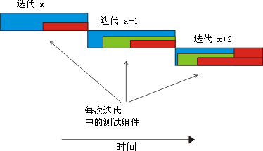
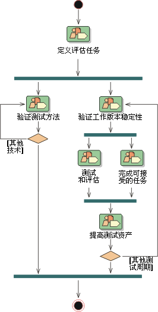
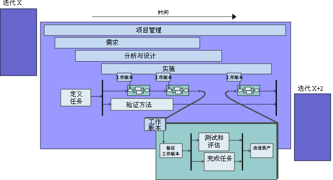

|
软件在 RUP 软件开发生命周期中是通过迭代改进的。在这个流程环境中遵循同等的迭代方法会让测试生命周期有所受益。在每个迭代中，软件开发团队会产生一个或多个工作版本，而每个工作版本就是一个潜在的测试候选对象。
开发团队的重点和目标随迭代的不同而不同。因此，测试团队成员必须相应地组织他们的测试工作。我们建议您将预先、详细的测试规划和设计的数量保持在最低程度，并且，如果需要这么做，就努力在这项工作中设定与实际使用尽可能接近的时间。我们还建议您在提前时间不早于一个迭代的时候完成预先、详细的测试开发。
为每个工作版本实施和执行的测试都会经过补充、改进和删除。这些测试中的某一些会保留下来并积累在测试主体中，以供用于对在将来的每个测试周期中使用的后续工作版本进行回归测试。正如修订软件本身一样，这种方法改动和修订整个流程中的测试。没有不变的软件规范和测试。下图说明了测试如何随时间的推移而演变。

这个迭代方法（结合使用组件体系结构）要求您考虑在每个后续工作版本中对产品质量进行回归测试。所有在迭代 X 中开发的测试都是迭代
X+1、X+2...中的回归测试的潜在候选对象。当同一个测试可能要重复数次时，考虑使该测试自动化是值得的。测试自动化是应对使用方案的重复测试的方法，可从中解放测试人员，让他们得以在新的功能领域中研究测试。
在不考虑项目剩余部分的情况下看看测试生命周期。下图显示了在给定迭代中“测试”规程的工作细节分类。

这个生命周期与剩余开发团队遵循的迭代周期一致。“迭代”由测试团队的调查开始，测试团队与项目经理和其他项目干系人就在即将来临的迭代中进行的、最为有用的测试工作进行协商。大多数测试团队成员都参与此协商工作。
通常，如下一个图所示，每个迭代包含至少一个测试周期。为每个“迭代”生成多个工作版本并将测试周期与每个工作版本协调一致，这是相当常见的做法。但是，在某些情况下，特定的工作版本不会经过测试。
随着核心测试工作的进行，团队中的部分成员可能正在调查新的测试技巧。这样的调查努力证明这些技巧是有用的因此团队可依赖于它们（尤其是在后续迭代中）。

测试生命周期是软件生命周期的一部分；它们应在同等的时限内开始。测试的设计和开发流程可与软件产品本身的开发流程一样复杂和艰巨。如果测试不按第一个可执行软件发行版相应地开始，那么测试工作就会将太多的问题延迟到开发周期的后期才发现。这经常导致在开发时间安排的结尾再补加一段很长的错误修正时间，结果无法实现原定目标并且会消除迭代开发的益处。
尽管早期开始的测试规划和定义任务可在早期规范工作中暴露出重要故障或缺陷，但是我们建议您要小心地选择要提前进行的测试工作。注意已提及的返工可能性的同时，测试团队也需要小心地保持他们作为公正的质量顾问的角色，而不要充当“质量警察”使早期的需求和设计任务出现偏差。按照项目团队的本性，项目团队早期为了解问题和解决方案空间所作的尝试会有缺陷。如果对该早期工作的质量提出不合理的要求，就有可能在测试团队和开发组剩余团队之间产生嫌隙。
在迭代中发现的问题可在同一迭代中解决，或推迟到下一个迭代中解决（这样的决定最终由“项目经理”角色作出）。测试团队和项目经理的主要任务之一是：通过验证是否达到在“迭代计划”中概述的迭代目标，来评估迭代的完整性如何。从一个迭代到另一个迭代的跨越之间有持续进行的“需求发现”。您需要注意这一点并准备管理它。
您将如何执行测试取决于以下几个因素：
-
您的应用程序领域
-
您的预算
-
您公司的策略
-
您对风险的容忍度
-
您的职员
您在测试中投资多少取决于在您的特定环境中如何评估质量和容忍风险。
|